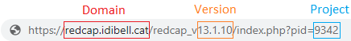
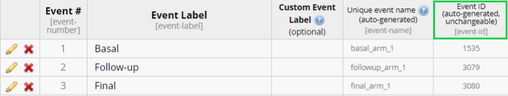

Queries are very important to ensure the accuracy and reliability of a REDCap dataset. The collected data may contain missing values, inconsistencies, or other potential errors that need to be identified in order to correct them later.
The examples use covican, the dataset included in the
package (described in vignette("REDCapDM")). For all the
following examples we will use the raw transformed data,
covican_transformed, obtained with
rd_transform():
covican_transformed <- rd_transform(covican)rd_query
The rd_query() function allows users to generate queries
by using a specific expression. It can be used to identify missing
values, values that fall outside the lower and upper limit of a variable
and other types of inconsistencies.
Output
First, we will examine the output of this function. When the
rd_query() function is executed, it returns a list that
includes a data frame with all the queries identified and a second
element with a summary of the number of generated queries in each
specified variable for each expression applied:
| Identifier | DAG | Event | Instrument | Field | Repetition | Description | Query | Code |
|---|---|---|---|---|---|---|---|---|
| 100-58 | Hospital 11 | Baseline visit | Comorbidities | copd |
|
Chronic obstructive pulmonary disease | The value is NA and it should not be missing | 100-58-1 |
| 105-11 | Hospital 5 | Baseline visit | Comorbidities | copd |
|
Chronic obstructive pulmonary disease | The value is NA and it should not be missing | 105-11-1 |
| 105-56 | Hospital 5 | Baseline visit | Comorbidities | copd |
|
Chronic obstructive pulmonary disease | The value is NA and it should not be missing | 105-56-1 |
| 112-15 | Hospital 10 | Baseline visit | Comorbidities | copd |
|
Chronic obstructive pulmonary disease | The value is NA and it should not be missing | 112-15-1 |
| 117-11 | Hospital 2 | Baseline visit | Comorbidities | copd |
|
Chronic obstructive pulmonary disease | The value is NA and it should not be missing | 117-11-1 |
| 117-22 | Hospital 2 | Baseline visit | Comorbidities | copd |
|
Chronic obstructive pulmonary disease | The value is NA and it should not be missing | 117-22-1 |
| Variables | Description | Event | Query | Total |
|---|---|---|---|---|
| copd | Chronic obstructive pulmonary disease | Baseline visit | The value should not be missing | 6 |
The data frame is designed to aid users in locating each query in their REDCap project. It includes information such as the record identifier, the Data Access Group (DAG), the event in which each query can be found, along with the name and the description of the analyzed variable and a brief description of the query.
Let’s see some examples of the usability of the function in generating different types of queries.
Missing values
If we want to identify missing values in the variables copd
and age in the raw transformed data, a list of required
arguments needs to be supplied. We must use the variables
argument to specify the variables from the database that will be
examined and the expression argument to describe the
expression that will be applied to those variables, in this case
‘is.na(x)’ to detect missing values where x represents the variable
itself. The first argument is the output of redcap_data()
(alternatively, the data and dic arguments can
be used to indicate the R objects containing the REDCap data and
dictionary, respectively). If the REDCap project presents a longitudinal
design, the event in which the described variables are present can be
specified through the use of the event argument; when the
event-form mapping is available, it is detected automatically (see
Not defining an event below):
example <- rd_query(covican_transformed,
variables = c("copd", "age"),
expression = c("is.na(x)", "is.na(x)"),
event = "baseline_visit_arm_1")
# Printing results
example$results| Variables | Description | Event | Query | Total |
|---|---|---|---|---|
| copd | Chronic obstructive pulmonary disease | Baseline visit | The value should not be missing | 6 |
| age | Age | Baseline visit | The value should not be missing | 5 |
In this case, we can observe that there are 6 missing values in the copd variable and 5 missing values in age.
Missing values of variables with a branching logic
Another example is when we try to identify missing values in
variables where a branching logic is employed. In this scenario, when
the conditions of the branching logic are not satisfied, by definition,
all of the values should be missing and thus queries for this specific
missing values (conditions not met) should not be reported. To address
this, the function, when working with raw data, follows a two-step
process. Firstly, it transforms the branching logic associated with the
specified variable. Then, it applies this transformed logic during the
query generation process. However, if the dataset has already been
transformed using the rd_transform() function beforehand,
the function will automatically apply the previously transformed
branching logic.
In both scenarios, if a variable contains branching logic that cannot
be converted from REDCap logic to R logic, the function will issue a
warning. The warning message will advise the user to review the
results element of the output for more information. This is
to indicate that there might be potential issues or limitations with the
conversion process for that specific variable’s branching logic:
example <- rd_query(covican_transformed,
variables = c("age", "copd", "potassium"),
expression = c("is.na(x)", "is.na(x)", "is.na(x)"),
event = "baseline_visit_arm_1")Warning:
[1m
[22mThe branching logic of the following variables could not be converted into R
logic: `potassium`.
[36mℹ
[39m Check the
[32mresults
[39m element of the output for details.
# Printing results
example$results| Variables | Description | Event | Query | Total | Branching logic |
|---|---|---|---|---|---|
| potassium | Potassium | Baseline visit | The value should not be missing | 31 | [available_analytics][current-instance]=‘1’ |
| copd | Chronic obstructive pulmonary disease | Baseline visit | The value should not be missing | 6 |
|
| age | Age | Baseline visit | The value should not be missing | 5 |
|
Based on the information provided, in addition to the missing values
of the age and copd variables already identified,
there are 31 missing values in the potassium variable. The
branching logic associated with this variable,
[available_analytics][current-instance]=‘1’, contains a
smart variable [current-instance], which cannot be directly
transformed into R logic.
To address this issue and correctly identify missing values only when available_analytics has the value 1, the filter argument can be utilized. By specifying the condition within the branching logic, you can ensure that the filtering process fulfills this condition.
It is worth noting that during the transformation process, the value 1 of the available_analytics variable was changed to Yes due to it being a factor. Therefore, when implementing the filter, you need to consider this transformed value rather than the original one. This ensures that the condition is accurately applied and missing values are appropriately identified based on the desired criteria.
example <- rd_query(covican_transformed,
variables = c("potassium"),
expression = c("is.na(x)"),
event = "baseline_visit_arm_1",
filter = c("available_analytics=='Yes'"))Warning:
[1m
[22mThe branching logic of the following variables could not be converted into R
logic: `potassium`.
[36mℹ
[39m Check the
[32mresults
[39m element of the output for details.
# Printing results
example$results| Variables | Description | Event | Query | Total | Branching logic |
|---|---|---|---|---|---|
| potassium | Potassium | Baseline visit | The value should not be missing | 21 | [available_analytics][current-instance]=‘1’ |
The total number of missing values changes when we use the
filter argument, the variable potassium now
presents 21 missing values instead of the previous 31 cases identified.
This means that we were identifying 10 missing values in which
available_analytics did not have the value Yes and,
therefore, should not be considered as missing values.
Note: The
filterargument is treated as a vector, which means that we can add a filter to each specified variable. Also, even if this argument is used to apply the branching logic condition, the warning about the presence of unconverted branching logic will still be displayed. In this specific case, you can safely ignore this warning.
Expressions
Up until this point, we have illustrated examples where the
expression applied is used to detect missing values. But, as previously
mentioned, the rd_query() function is also able to identify
outliers or observations that fulfill a specific condition. Hence, to
identify, for example, all the observations where age is
greater than 70, we should use the expression argument
again specifying ‘x>70’:
example <- rd_query(variables="age",
expression="x>70",
event="baseline_visit_arm_1",
dic=covican_transformed$dictionary,
data=covican_transformed$data)
# Printing results
example$results| Variables | Description | Event | Query | Total |
|---|---|---|---|---|
| age | Age | Baseline visit | The value should not be greater than 70 | 76 |
We can add other variables with other specific expressions in the
same function because it is designed to treat the arguments
variables and expression as vectors, so that
the element at position n of expression is applied
to the element at position n of variables.
For example, if we want to identify all the observations where age is greater than 70 and all the observations where copd is ‘Yes’ we shall use:
example <- rd_query(covican_transformed,
variables=c("age", "copd"),
expression=c("x > 70", "x == 'Yes'"),
event="baseline_visit_arm_1")
# Printing results
example$results| Variables | Description | Event | Query | Total |
|---|---|---|---|---|
| age | Age | Baseline visit | The value should not be greater than 70 | 76 |
| copd | Chronic obstructive pulmonary disease | Baseline visit | The value should not be equal to ‘Yes’ | 21 |
In a more complex scenario, for example, to identify all the observations where age is greater than 70, less than 80, or it is a missing value we shall use the following expression:
example <- rd_query(covican_transformed,
variables="age",
expression="(x>70 & x<80) | is.na(x)",
event="baseline_visit_arm_1")
# Printing results
example$results| Variables | Description | Event | Query | Total |
|---|---|---|---|---|
| age | Age | Baseline visit | The value should not be (greater than 70 and less than 80) or missing | 54 |
Special cases
Same expression for all variables
In order to evaluate the same expression for all variables, the user
should supply just a single element for expression:
example <- rd_query(covican_transformed,
variables = c("copd","age","dm"),
expression = "is.na(x)",
event = "baseline_visit_arm_1")
# Printing results
example$results| Variables | Description | Event | Query | Total |
|---|---|---|---|---|
| copd | Chronic obstructive pulmonary disease | Baseline visit | The value should not be missing | 6 |
| age | Age | Baseline visit | The value should not be missing | 5 |
| dm | Diabetes (treated with insulin or antidiabetic … | Baseline visit | The value should not be missing | 5 |
The function issues a warning every time the same expression is applied to all variables to ensure that the user did not make a mistake when providing the information for each argument.
Not defining an event
Another special case is when the data analysed corresponds to a REDCap longitudinal project, but the event argument of the function is not defined.
There are two possibilities here:
- With event-form: the function automatically detects in which events the variable is collected and generates queries for those events.
- Without event-form: the function generates queries for all events present in the dataset.
example <- rd_query(covican_transformed,
variables = "copd",
expression = "is.na(x)")
# Printing results
example$results| Variables | Description | Event | Query | Total |
|---|---|---|---|---|
| copd | Chronic obstructive pulmonary disease | Baseline visit | The value should not be missing | 6 |
We get the same result as if we had used the event
argument.
my_list <- subset(covican_transformed, !names(covican_transformed) %in% "event_form")
example <- rd_query(my_list,
variables = "copd",
expression = "is.na(x)")Warning:
[1m
[22mNo event or event-form has been specified. Therefore, the function will
automatically consider observations from all events in the dataset.
[36mℹ
[39m Ensure that the selected variable(s) is(are) collected in all specified
events. This will avoid overestimating the number of queries.
# Printing results
example$results| Variables | Description | Event | Query | Total |
|---|---|---|---|---|
| copd | Chronic obstructive pulmonary disease | Follow up visit day 14+/-5d | The value should not be missing | 152 |
| copd | Chronic obstructive pulmonary disease | Baseline visit | The value should not be missing | 6 |
As we can see, there are 152 new missing values in the follow-up visit because the variable copd it is only present in the baseline visit. Thus, it might result in an overestimation of the number of missing values, as the function considers all the events of the study if no event is specified.
The function will issue a warning if it detects that the REDCap
project contains multiple events, the event-form mapping is not
specified and the event argument is not specified.
Additional arguments
variable_names, query_name, instrument
These arguments allow users to customize the data frame returned by
the function. We can change the variables names using the
variables_names argument, alter the description of the
query using the query_name argument or even change the name
of the instrument using the instrument argument:
example<- rd_query(covican_transformed,
variables = c("copd"),
variables_names = c("Chronic obstructive pulmonary disease (Yes/No)"),
expression = c("is.na(x)"),
query_name = c("COPD is a missing value."),
instrument = c("Admission"),
event = "baseline_visit_arm_1")Output:
| Identifier | DAG | Event | Instrument | Field | Repetition | Description | Query | Code |
|---|---|---|---|---|---|---|---|---|
| 100-58 | Hospital 11 | Baseline visit | Admission | copd |
|
Chronic obstructive pulmonary disease (Yes/No) | COPD is a missing value. | 100-58-1 |
negate
This argument can be used to negate the expression applied to the
variables. For example, if we want to identify all the non missing
values of the variable copd, we can apply the expression
‘is.na(x)’ which normally would report the missing values and add
negate = TRUE, so the result will be the number of non
missing values in copd:
example <- rd_query(covican_transformed,
variables = "copd",
expression = "is.na(x)",
negate = TRUE,
event = "baseline_visit_arm_1")
# Printing results
example$results| Variables | Description | Event | Query | Total |
|---|---|---|---|---|
| copd | Chronic obstructive pulmonary disease | Baseline visit | The value should be missing | 184 |
There are 184 non missing values in the variable copd.
add_to
In order to keep all queries in the same R object, we can use the
add_to argument to specify the output of another query
dataset.
example2 <- rd_query(covican_transformed,
variables = "age",
expression = "is.na(x)",
event = "baseline_visit_arm_1",
add_to = example)
# Printing results
example2$results| Variables | Description | Event | Query | Total |
|---|---|---|---|---|
| copd | Chronic obstructive pulmonary disease | Baseline visit | The value should be missing | 184 |
| age | Age | Baseline visit | The value should not be missing | 5 |
We have joined our former output of 184 non missing values in the variable copd with the new query dataset composed by the 5 missing values of the variable age.
report_title
To customize the title of the summary of queries, we can use the
report_title argument:
example <- rd_query(covican_transformed,
variables = c("copd", "age"),
expression = c("is.na(x)", "x<20"),
event = "baseline_visit_arm_1",
report_title = "Missing COPD values in the baseline event")
# Printing results
example$results| Variables | Description | Event | Query | Total |
|---|---|---|---|---|
| copd | Chronic obstructive pulmonary disease | Baseline visit | The value should not be missing | 6 |
The default title of the summary is “Report of queries” but we have changed it to “Missing COPD values in the baseline event”.
report_zeros
By default, the function will only report, in the summary of queries,
variables with at least one query and will omit those with zero queries.
To include these omitted variables in the summary, we can use the
report_zeros argument:
example <- rd_query(covican_transformed,
variables = c("copd", "age"),
expression = c("is.na(x)", "x < 20"),
event = "baseline_visit_arm_1",
report_zeros = TRUE)
# Printing results
example$results| Variables | Description | Event | Query | Total |
|---|---|---|---|---|
| copd | Chronic obstructive pulmonary disease | Baseline visit | The value should not be missing | 6 |
| age | Age | Baseline visit | The value should not be less than 20 | 0 |
The variable age is reported in the summary in spite of not having any queries identified.
by_dag
If the REDCap project has Data Access Groups (DAGs), it might be of
our interest to report the summary by each one of the DAGs. To do that,
we can use the by_dag argument:
example <- rd_query(covican_transformed,
variables = c("copd", "age"),
expression = c("is.na(x)", "x>60"),
event = "baseline_visit_arm_1",
by_dag = TRUE)Now we can choose to see the report of a specific DAG, for example, the summary of the generated queries for the Hospital 2:
# Printing results
example$results$`Hospital 2`| DAG | Variables | Description | Event | Query | Total |
|---|---|---|---|---|---|
| Hospital 2 | age | Age | Baseline visit | The value should not be greater than 60 | 3 |
| Hospital 2 | copd | Chronic obstructive pulmonary disease | Baseline visit | The value should not be missing | 2 |
For this DAG, there are 3 values of age bigger than 60 and 2 missing values in the variable copd.
link
There is an easier way to have access to each query in REDCap through
the output of the function. By using the link argument to
specify the domain, the REDCap version, the project ID and the event ID,
the function will add a column in the $queries element of the
output with the direct link to REDCap where the query can be found.
Note: The link will only work if the user has access to the project and has at least data viewing rights.
We can find the information about the domain, the REDCap version and the project ID in the link of the Project Home of the project in REDCap:

The identifiers of the events can be exported from: Project Setup < Define My Events

Once we have this information, we pass it as a list to the
link argument:
example <- rd_query(covican_transformed,
variables = "age",
expression = "x>89",
event = "baseline_visit_arm_1",
link = list(domain = "redcappre.igtp.cat",
redcap_version = "13.1.9",
proj_id = 800,
event_id = c("baseline_visit_arm_1" = 811, "follow_up_visit_da_arm_1" = 812)))The output of the function now has an additional column with the link to the respective query:
# Printing results
example$queries$Link[1] "https://redcappre.igtp.cat/redcap_v13.1.9/DataEntry/index.php?pid=800&event_id=811&page=demographics&id=109-22"
[2] "https://redcappre.igtp.cat/redcap_v13.1.9/DataEntry/index.php?pid=800&event_id=811&page=demographics&id=110-19"We can go straight to the specific query by copying and pasting the link into the web browser of your choice.
rd_event
When working with a longitudinal REDCap project (presence of events),
the exported data has a structure where each row represents one event
per record. However, by default, REDCap will not export the
corresponding rows of the events that have no collected data. So, if we
try to identify missing values in variables that are inside a missing
event for some records using the rd_query() function, these
missing values will not be identified because they do not exist in the
exported data. The rd_event() function can be used to point
out in how many records an event does not exist:
example <- rd_event(covican_transformed,
event = "follow_up_visit_da_arm_1")
# Print results
example$results| Events | Description | Total |
|---|---|---|
| follow_up_visit_da_arm_1 | Follow up visit day 14+/-5d | 38 |
There are a total of 38 events per record without any row
corresponding to the event Follow up visit day 14+/-5d. Thus,
when searching for missing values of variables in the Follow up
visit day 14+/-5d event, we need to consider that there will be 38
additional missing values which will not be accounted for by
rd_query().
It might happen that an event is not mandatory for all records so we
only want to check if the event is missing in a subgroup of records. For
example, in the COVICAN study only patients satisfying the
inclusion and exclusion criteria would have to perform the follow up
visit. Therefore, to check if the follow up event is missing only in the
records that fulfill the inclusion and exclusion criteria, we can use
the filter argument of the rd_event()
function:
example <- rd_event(covican_transformed,
event = "follow_up_visit_da_arm_1",
filter = "screening_fail_crit==0")
# Print results
example$results| Events | Description | Total |
|---|---|---|
| follow_up_visit_da_arm_1 | Follow up visit day 14+/-5d | 34 |
Like the rd_query() function, this function also treats
the argument event as a vector allowing us to check for
multiple missing events at the same time.
example <- rd_event(covican_transformed,
event = c("baseline_visit_arm_1","follow_up_visit_da_arm_1"),
filter = "screening_fail_crit==0",
report_zeros = TRUE)
# Print results
example$results| Events | Description | Total |
|---|---|---|
| follow_up_visit_da_arm_1 | Follow up visit day 14+/-5d | 34 |
| baseline_visit_arm_1 | Baseline visit | 0 |
Note: This function also has the arguments
query_name,add_to,report_title,report_zerosandlinkthat work in the same way as in the examples of therd_query()section (Additional arguments).
check_queries
Once the process of identifying queries is complete, the typical approach would be to address them by modifying the original dataset in REDCap and re-run the query identification process generating a new query dataset.
The check_queries() function compares the previous query
dataset with the new one by using the arguments old and
new, respectively. The output remains a list with 2 items,
but the data frame containing the information for each query will now
have an additional column (“Modification”) indicating which queries are
new, which have been miscorrected, which have been solved, and which are
still pending. Besides, the summary will show the number of queries in
each one of these categories:
check <- check_queries(old = example$queries,
new = new_example$queries)
# Print results
check$results| State | Total |
|---|---|
| Pending | 7 |
| Solved | 4 |
| Miscorrected | 1 |
| New | 1 |
There are 7 queries pending resolution, 4 solved queries, 1 miscorrected query, and 1 new query between the previous and the new query dataset.
Note: The “Miscorrected” category includes queries that belong to the same combination of record identifier and variable in both the old and new reports, but with a different reason. For instance, if a variable had a missing value in the old report, but in the new report shows a value outside the established range, it would be classified as “Miscorrected”.
Query control output:
| Identifier | DAG | Event | Instrument | Field | Repetition | Description | Query | Code | Modification |
|---|---|---|---|---|---|---|---|---|---|
| 100-58 | Hospital 11 | Baseline visit | Comorbidities | copd |
|
Chronic obstructive pulmonary disease | The value is NA and it should not be missing | 100-58-1 | Pending |
| 100-79 | Hospital 11 | Baseline visit | Comorbidities | copd |
|
Chronic obstructive pulmonary disease | The value is NA and it should not be missing | 100-79-1 | New |
| 102-113 | Hospital 24 | Baseline visit | Demographics | age |
|
Age | The value is NA and it should not be missing | 102-113-1 | Pending |
| 105-11 | Hospital 5 | Baseline visit | Comorbidities | copd |
|
Chronic obstructive pulmonary disease | The value is NA and it should not be missing | 105-11-1 | Pending |
| 105-56 | Hospital 5 | Baseline visit | Demographics | age |
|
Age | The value is 80 and it should not be >70 | 105-56-3 | Miscorrected |
rd_export
With the help of the rd_export() function, we can export
the identified queries to a .xlsx file of our choice:
rd_export(example)This is the easiest way to use the function and it will create a file with the name “example.xlsx” in your current working directory.
In order to have a more personalised output file, we can add information to the following arguments:
rd_export(queries = example$queries,
column = "Link",
sheet_name = "Queries - Proyecto",
path = "C:/User/Desktop/queries.xlsx",
password = "123") We specify the sheet name with the sheet_name argument
and the path to the file to be exported with the path
argument. To prevent anyone from modifying the exported file, we can
also add a password.
The column argument refers to the column of the report
that contains the link to each query. The function converts this column
into hyperlink format in the exported file, so that we can simply click
on the link to go to the specific query in the REDCap project. This
column only exists when the queries were identified with the
link argument of rd_query().
In both cases, a message will be generated in the console informing you that the file has been created and where it is located.